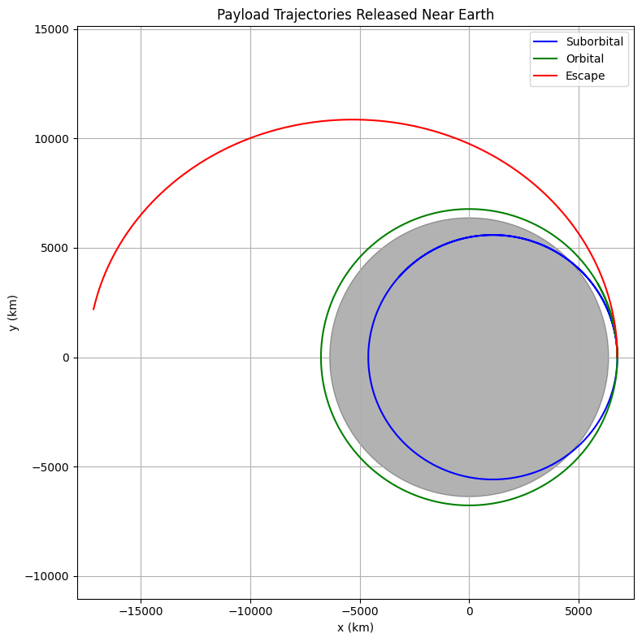

Problem 3
Trajectories of a Freely Released Payload Near Earth
Motivation
When a payload is released from a moving rocket near Earth, its future motion depends on initial speed, direction, and gravitational pull. Such situations are essential to understand for satellite deployment, orbital transfers, and safe reentry or escape missions. This problem blends gravitational physics, orbital mechanics, and numerical methods to simulate and predict these possible trajectories.
Objective
- Analyze different types of trajectories: elliptical, parabolic, and hyperbolic.
- Simulate motion based on initial conditions like altitude, speed, and direction.
- Identify whether the object will orbit, fall back, or escape.
- Visualize and interpret results using Python simulations.
Theoretical Foundation
The object follows Newton’s Law of Gravitation:
\[\vec{F} = -\frac{GMm}{r^2} \hat{r}\]
Resulting in the acceleration:
\[\vec{a} = -\frac{GM}{r^2} \hat{r}\]
Where:
- $ G = 6.67430 \times 10^{-11} \, \text{Nm}^2/\text{kg}^2$
- $ M = $ mass of Earth
- $ r = $ distance from Earth’s center
The total energy $ E $ of the system determines the type of trajectory:
- $ E < 0 $ → Elliptical Orbit
- $ E = 0 $ → Parabolic Escape
- $ E > 0 $ → Hyperbolic Escape
Python Simulation
import numpy as np
import matplotlib.pyplot as plt
from scipy.integrate import solve_ivp
# Constants
G = 6.67430e-11 # m^3/kg/s^2
M = 5.972e24 # kg (mass of Earth)
R_earth = 6.371e6 # m
# Define gravitational acceleration
def gravity(t, y):
x, vx, y_, vy = y
r = np.sqrt(x**2 + y_**2)
ax = -G * M * x / r**3
ay = -G * M * y_ / r**3
return [vx, ax, vy, ay]
# Initial conditions
altitude = 400e3 # 400 km above surface
r0 = R_earth + altitude
v_circular = np.sqrt(G * M / r0)
# Try different velocities (suborbital, orbital, escape)
initial_velocities = [0.9*v_circular, 1.0*v_circular, 1.2*v_circular]
colors = ['blue', 'green', 'red']
labels = ['Suborbital', 'Orbital', 'Escape']
# Time span
t_span = (0, 6000) # seconds
t_eval = np.linspace(*t_span, 5000)
plt.figure(figsize=(8, 8))
for v0, color, label in zip(initial_velocities, colors, labels):
y0 = [r0, 0, 0, v0] # x, vx, y, vy
sol = solve_ivp(gravity, t_span, y0, t_eval=t_eval, rtol=1e-8)
x, y = sol.y[0], sol.y[2]
plt.plot(x/1000, y/1000, color=color, label=label)
# Earth
circle = plt.Circle((0, 0), R_earth/1000, color='black', alpha=0.3)
plt.gca().add_patch(circle)
plt.xlabel("x (km)")
plt.ylabel("y (km)")
plt.title("Payload Trajectories Released Near Earth")
plt.legend()
plt.axis("equal")
plt.grid(True)
plt.tight_layout()
plt.show()
